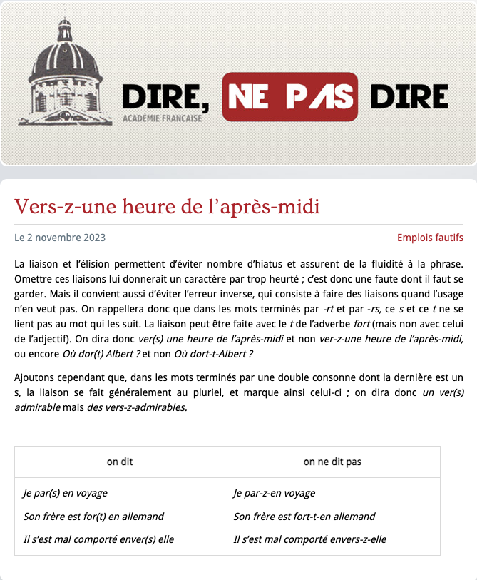
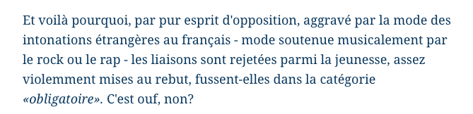
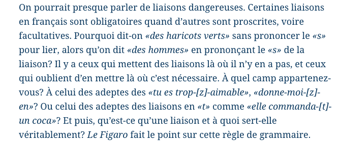
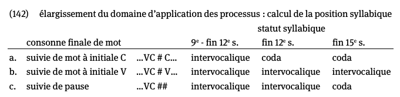
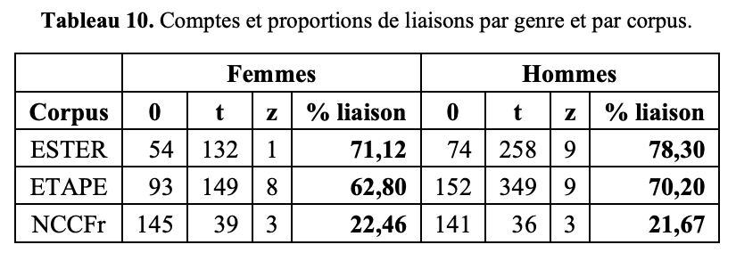
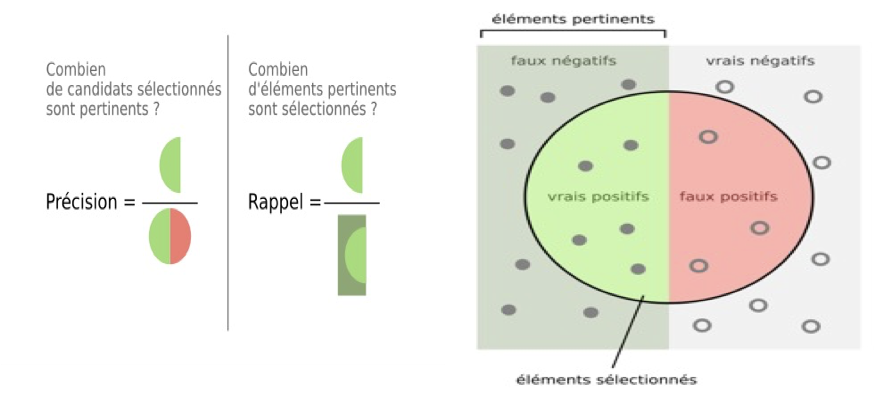

corpus_phon <- read.csv("/Users/jeremy-ua/Downloads/corpus_data_2.csv")C’est la faute des Zhollandais !
3.1 Le discours public



3.2 Qu’est-ce que la liaison ?
Important
Définition
La liaison consiste à prononcer une consonne finale autrement muette (n, r, s, t, z, plus rarement p et g).
Elle peut être, selon la construction syntaxique :
- obligatoire
- facultative
- impossible
3.2.1 Principe
- On appelle liaison la prononciation d’une consonne, appelée consonne de liaison, devant un mot vocalique.
- Ainsi, les consonnes /t/ et /z/ sont prononcées à la fin de petit ennui et les enfants, alors qu’elles ne le sont pas quand le mot est isolé ou devant consonne : /lɛ/, /pəti/.
- L’identité de la consonne de liaison est déterminée par le mot et correspond à une lettre finale muette à l’écrit, ici t et s.
- petit_ennui /pə.ti.tɑ̃.nɥi/
- les_enfants /lɛ.zɑ̃.fɑ̃/
- La liaison n’est pas systématique lorsqu’un mot finissant par une voyelle est suivi d’un mot vocalique.
- Des articles, Paul en a écrit [deux_à trois] le jour de la date limite. /dø.za.tʁwa/
- Des articles, Paul en a écrit [deux] à trois jours de la date limite. /dø.a.tʁwa/
- Pourquoi ?
- deux à trois forme un constituant syntaxique ou pas.
3.2.2 La liaison et la graphie
- La liaison n’est généralement pas représentée dans la graphie : les mots donnant lieu à liaison se terminent graphiquement par une lettre dite muette, qui n’est prononcée qu’en contexte de liaison.
- La graphie n’indique pas de manière fiable que l’on a affaire à une consonne de liaison.
- Dans kit (/kit/), bis (/bis/) et fier (/fjɛʁ/), par exemple, la consonne finale est une consonne fixe, qui se prononce en mot isolé.
- Dans petit (/pəti/), un (/œ̃/) et truffier (/tʁyfje/), par exemple, il s’agit bien d’une consonne de liaison.
- La consonne graphique ne correspond pas toujours à la consonne prononcée en cas de liaison :
- ainsi, le d final de grand correspond à un /t/ de liaison (grand_| ami prononcé /gʁɑ̃.ta.mi/) ;
- le s final de gros correspond à un /z/ (gros_| ennui prononcé /gʁo.zɑ̃.nɥi/).
- La graphie n’indique pas de manière fiable que l’on a affaire à une consonne de liaison.
3.2.3 La liaison et les ambiguïtés
- La prononciation d’une consonne de liaison peut rendre ambiguës certaines séquences. Les énoncés suivants sont le plus souvent identiques phonétiquement, mais désambiguïsés par le contexte.
- Ils sont très_amis. /il.sɔ̃.tʁɛ.za.mi/
- Ils sont treize amis. /il.sɔ̃.tʁɛ.za.mi/
3.3 Historique de la liaison
Du point de vue historique, les consonnes dites de liaison correspondent à des consonnes finales qui ont cessé d’être prononcées entre le XIIᵉ et le XVIᵉ siècle, tout d’abord devant consonne, puis en mot isolé.
- Jusqu’au 12e siècle, les processus phonologiques se sont limités à la frontière des mots.
- La frontière de mot bloque l’application des processus phonologiques.
3.3.1 Le sandhi externe
- 2e moitié du 12e siècle : les changements phonologiques deviennent insensibles aux frontières de mots (sandhi externe).
Important
Définition
Sandhi : altération phonétique créée à la finale et à l’initiale des mots lorsqu’ils sont en contact dans la phrase.
- Une consonne finale est placée en coda devant mot à initiale consonantique (C# C), mais vaut une intervocalique devant mot à initiale vocalique (C# V). C’est seulement devant pause, i.e. en l’absence de mot suivant, qu’elle demeure non influencée, i.e. finale (C##).
3.3.2 1re étape : chute devant consonne (fin 12e s.)
Perte de la consonne finale devant mot à initiale consonantique à partir de la fin du 12e siècle.
- Un -t final, par exemple, prononcé en toute circonstance au 11e siècle, avait trois prononciations à partir de la fin du 12e siècle :
- (__# C) il tombe devant mot à initiale consonantique ;
- (__# V) intervocalique devant mot à initiale vocalique ;
- (__##) devant pause, le -t final demeure tel quel.
- Cette distribution tripartite était générale en ancien français pour toutes les obstruantes sourdes, les autres consonnes (obstruantes voisées et sonantes) ne pouvant l’exprimer puisqu’elles ne possèdent pas de forme sourde.
3.3.3 2e étape : chute devant pause (fin 15e s.)
Amuïssement également devant pause à partir de la fin du 15e siècle.
- la consonne finale cesse d’être prononcée également devant pause ;
- sauf pour deux mots, dix et six, qui ignorent cette règle.

3.3.4 Conséquences multiples
Changement accentuel : à partir de la fin du 12e siècle, l’accent est distribué sur une portion plus grande de la chaîne linéaire, qu’on a pu appeler groupe de souffle ou accent de groupe.
Élision : les mots perdent leur autonomie syntaxique et phonologique : les pronoms sujets, par exemple, deviennent des clitiques (perte d’autonomie syntaxique) et, en hiatus, perdent leur voyelle finale (élision : perte d’autonomie phonologique).
Pronom sujet : les formes fortes, ou toniques, des pronoms sujets n’ont émergé qu’à la fin du 12e siècle : auparavant, il n’y avait qu’une seule forme, autonome parce que protégée par le bornage de la frontière de mot, et donc toujours accentuée.
Toutes ces évolutions ont été provoquées par un seul événement : la modification de la taille du domaine [mot 1] [mot 2] > [mot 1 mot 2].
3.4 Les formes de la liaison
3.4.1 La liaison et le t euphonique
- L’insertion d’un t dit euphonique après certaines formes verbales (Viendra-t-il ?) et d’un s final dans certains impératifs (Vas-y !)
- Va au cinéma !
- *Vas au cinéma !
- 2 différences avec liaisons :
- il est noté dans la graphie et se produit seulement avant un pronom faible, pas avant un mot vocalique
- Il existe des insertions analogues, mais condamnées par la norme et rarement notées dans la graphie (Donne-moi-z-en, au lieu de Donne-m’en)
3.4.2 L’inventaire des consonnes de liaison
- L’inventaire des consonnes de liaison est relativement limité en français contemporain : /z/, /t/, /n/, /p/, /ʁ/, /g/.
- la consonne finale /p/ ne se rencontre que dans trop et beaucoup et /g/ dans trois mots (barlong, long et oblong).
- /n/ apparaît notamment à la fin de nombreux adjectifs,
- /ʁ/ à l’infinitif des verbes du 1ᵉʳ groupe et dans les adjectifs en -er.
- Les consonnes /z/ et /t/ se rencontrent dans de très nombreux mots, étant donné le rôle qu’elles jouent dans la flexion des noms, des adjectifs
3.4.3 Liaison et flexion : la conjugaison
- Au présent, le -s final de la 2ᵉ, et parfois 1ʳᵉ, personne du singulier donne lieu à un /z/ de liaison
- Il en va de même du -s et du -z final des deux premières personnes du pluriel 13b
- De même, les formes verbales avec un -t final de la 3ᵉ personne du singulier et du participe présent , ou le -ent de la 3ᵉ personne du pluriel , sont susceptibles d’être prononcées avec un /t/ final.
- tous les infinitifs en -er sont susceptibles d’être réalisés avec un /ʁ/ final
- tous les verbes à l’imparfait singulier peuvent prendre un /z/ final aux deux premières personnes (Je voulais_y aller.)
- un /t/ à la 3ᵉ personne (Il voulait_y aller.),
- Ainsi, l’on distingue les noms as et but, avec consonne finale fixe, des formes verbales as et but, avec consonne de liaison
3.4.4 Liaison et flexion : le pluriel
- Les consonnes prononcées en contexte de liaison constituent souvent une partie, voire l’intégralité, de la flexion d’un mot. Ainsi, les noms et adjectifs sont tous susceptibles d’être prononcés avec un /z/ final s’ils sont au pluriel ; celui-ci se note s ou x dans la graphie sauf si la forme du singulier se termine déjà par s, x ou z
3.4.4.1 Les formes nasales
- Un certain nombre de mots utilisent en contexte de liaison une forme phonologique qui ne se laisse pas décrire comme une simple insertion de consonne.
- Quand la forme de base se termine toujours par une voyelle nasale la consonne de liaison est /n/
- L’insertion de /n/ dans la forme de liaison s’accompagne alors d’une dénasalisation de cette voyelle
- sauf avec aucun, chacun, commun, en, on, un.
- un bon_environnement /bɔ.nɛ̃.vi.ʁɔn.mɑ̃/
- Avec les possessifs (mon, ton, son), la dénasalisation est facultative
- mon_ami /mɔ̃.na.mi/ ou /mɔ.na.mi/
- À une forme en /ɛ̃/ peut correspondre une forme de liaison en /ɛn/ (plein) ou /in/ (divin) 15d, qui représentent à chaque fois la forme du féminin (pleine, divine).
- en plein_air /plɛ.nɛʁ/
- un divin_enfant /di.vi.nɑ̃.fɑ̃/
- Avec les possessifs (mon, ton, son), la dénasalisation est facultative
- un bon_environnement /bɔ.nɛ̃.vi.ʁɔn.mɑ̃/
- sauf avec aucun, chacun, commun, en, on, un.
3.4.4.2 Les formes de liaison irrégulières
- Quelques mots connaissent une forme inhabituelle en contexte de liaison.
- la forme de liaison exceptionnelle est homophone d’une forme de l’autre genre pour le même lexème.
- ce masculin est devient cet /sɛt/ devant voyelle, et ma féminin devient mon /mɔ̃/
- De même, les formes de liaison exceptionnelles de cinq adjectifs (beau, fou, mou, nouveau, vieux) au masculin singulier (bel, fol, mol, nouvel, vieil) sont homophones des formes de féminin singulier (belle, folle, molle, nouvelle, vieille)
- Enfin, l’adverbe comparatif plus et les cardinaux dix et six, bien qu’à finale consonantique en mot isolé, ont une forme de liaison (/plyz/ et /diz/, /siz/). Pour le cardinal neuf, la liaison (/nœv/) est limitée aux contextes neuf_ans et neuf_heures.
| FORME ISOLÉE | FORME DE LIAISON | FORME DE BASE | EXEMPLES | REMARQUES |
| ce /sə/ | cet /sɛt/ | /sɛ/ (ces) | cet ami /sɛ.ta.mi/ | |
| beau, fou, mou, nouveau, vieux | bel /bɛl/, fol, mol, nouvel, vieil | /bo/, /fu/, /mu/, /nuvo/, /vjø/ | un beau jour, un bel ami, un nouvel ami | |
| plus /plys/ | plus /plyz/ | /ply/ (plus) | pas plus utile |
3.4.5 La forme de liaison et le féminin de l’adjectif
Le plus souvent, la forme de liaison de l’adjectif, au masculin singulier, correspond à la forme sonore du féminin. Par exemple, petit a au masculin la forme /pəti/, au féminin petite /pətit/ et au masculin avec liaison petit_enfant prononcé /pə.ti.tɑ̃.fɑ̃/.
En revanche, les adjectifs grand et gros sont exceptionnels de ce point de vue : le féminin de gros est grosse (/ɡʁos/), alors que la forme de liaison est /ɡʁoz/ (gros_effort), le féminin de grand est grande (/ɡʁɑ̃d/) alors que la forme de liaison est /ɡʁɑ̃t/ (grand_homme).
3.4.6 Les formes de contre-liaison
- Dans certains cas, la consonne finale est prononcée quand le mot est isolé, mais n’est pas prononcée devant consonne. On parle de contre-liaison.
- Six, huit et dix sont prononcés /sis/, /ɥit/ et /dis/, en mot isolé ou en finale
- /si/, /ɥi/ et /di/devant consonne
- Ils sont dix. /dis/
- six garçons /si/
- six_amis /siz/
- La forme de contre-liaison est obligatoire avant un mot non vocalique :
- six garçons ne peut pas se prononcer /sis ɡaʁsɔ̃/.
- Six et dix ont en outre une forme de liaison (/siz/ et /diz/) alors que huit garde sa forme de base devant un mot vocalique (huit enfants).
- Le mot cinq /sɛ̃k/ possède une forme de contre-liaison /sɛ̃/ dont l’usage tend à disparaître sauf dans les séquences cinq cents et cinq mille /sɛ̃ mil/.
- L’adverbe comparatif plus est prononcé /plys/ en finale ou en mot isolé, avec une forme de contre-liaison et une forme de liaison
Il diffère sur ce point de ses homophones l’adverbe négatif plus /ply/, la préposition arithmétique plus (/plys/) et le nom plus (/plys/ : un plus, deux plus), qui n’ont pas de forme de contre-liaison.
Pour l’adverbe comparatif, la forme /plys/ s’emploie dans tous les contextes où la liaison est obligatoire, par exemple entre sujet et verbe
Dans les contextes de liaison facultative, deux possibilités se présentent : la forme de liaison /plyz/ en puis, en registre plus élevé, un mot non vocalique 18f. En 18c, on préfère /ply/ et en 18d, /plyz/.
Enfin, l’adverbe comparatif plus, en tant que forme de contre-liaison, s’emploie dans les contextes de liaison facultative et obligatoire, quand le mot qui suit n’est pas un mot vocalique.
3.5 Les usages de la liaison
3.5.1 Liaison obligatoire, facultative, impossible…
- La liaison a lieu dans des conditions en partie déterminées par la syntaxe.
- Il est d’usage de distinguer les contextes de liaison obligatoire, par exemple entre déterminant et nom
- mes_amis /me.za.mi/ / mes_amis
- les contextes de liaison facultative, entre nom et adjectif épithète
- amis_intimes /a.mi.zɛ̃.tim/ ou /amis_intimes/
- les contextes de liaison impossible, entre sujet nominal et verbe
- /me.za.mi.a.ʁiv/ / mes_amis_arrivent
3.5.1.1 En fonction du contexte syntaxique
- Du point de vue syntaxique, la liaison peut intervenir
- entre deux mots Mes amis arrivent.
- entre deux syntagmes a [les très charmants] [amis et parents] de Marie
- entre un syntagme et un mot [les très charmants] [amis] de Marie
- entre un mot et un syntagme [les charmants] [amis et parents] de Marie
- Pour qu’il y ait liaison, il faut que le premier élément autorise la liaison, mais aussi que son enchaînement avec le second l’autorise.
- Les propriétés du second élément, à partir du moment où il est vocalique 2, ont peu d’influence sur la possibilité de la liaison.
- la catégorie et la fonction syntaxique du premier élément sont importantes. Ainsi les déterminants (et plus généralement les spécificateurs) 19a, les adjectifs épithètes (et plus généralement les ajouts) 20 autorisent la liaison à leur droite, mais pas un sujet nominal
| CONTEXTES CONCERNÉS | LIAISON OBLIGATOIRE | LIAISON FACULTATIVE |
|---|---|---|
| début de phrase | quels, quelles + être Quels_ont été les problèmes ? |
jamais, plus, moins, mieux
Plus_on lit, plus_on apprend. |
| déterminant + nom | les_amis, ces_arbres, un_ami | — |
| adjectif + nom | adjectif cardinal ou indéfini (mes) trois_amis (ces) quelques_arbres |
autres adjectifs d’anciens(_)amis |
| nom (pluriel) + adjectif | expressions figées
|
des meubles(_)anciens |
| préposition + nom ou pronom | en, sans en_avance, sans_arrêt |
autres prépositions chez(_)elle |
| préposition + verbe | en_arrivant, sans_arrêter | après(_)avoir bu |
| préposition + autre catégorie | — | dans(_)une heure, dès(_)à présent, sans(_)un mot |
| pronom sujet + verbe | pronom personnel faible
Elles_arrivent. |
autres pronoms
|
| verbe + complément | — | Il avait(_)envie |
| verbe auxiliaire + participe passé | — | Il est(_)arrivé |
| subordonnant + phrase | — | dont(_)on parle |
- La liaison est impossible après un sujet nominal, même court
- Les enfants arrivent.
- Les boues ont ameubli le sol.
- Jean arrive.
- elle est possible après un sujet pronominal et obligatoire après les pronoms faibles
- Les pronoms personnels forts sujets, souvent en usage contrastif et formant un groupe accentuel, n’acceptent pas la liaison
- Tout_est bien qui finit bien.
- On_y va ?
- Ils_ont répondu.
- Eux ont répondu.
3.5.2 Le syntagme nominal sans nom
- Après un syntagme nominal sans nom la liaison en /z/ est impossible
- Certains / Plusieurs / Trois y sont allés.
- Assez a été dit.
- mais la liaison en /t/ est possible après beaucoup et trop
- Beaucoup_y ont contribué.
- Trop_| a été dit sur ce sujet.
3.5.3 La liaison après le verbe
- La liaison est possible entre le verbe et un complément ou un ajout
- b Les enfants dînent_à l’extérieur.
- Par ailleurs, elle est possible entre un ajout et un complément.
- Ils vont moins_à Paris ces temps-ci.
- Ils vont rarement_à Paris.
- Au-delà du premier complément, la liaison est impossible, entre succès et à en 29a, entre rarement et à en 29b. Mais si celui-ci est un pronom (rien, tout) 29c ou un adverbe dit léger 32d > XVIII-3.2.2, elle devient possible avec l’ajout ou le complément qui suit.
- Il doit [ses succès] à Lou.
- Il accompagne [son fils] rarement à Paris.
- Il doit tout_à Marie.
- Il dépensait moins_hier.
- Dans les phrases à temps composé, la liaison est possible avant le participe passé qui peut être considéré comme le premier complément de l’auxiliaire
- Diane n’a jamais_armé Lou.
- Lou a tout_expliqué à Victor.
- Après le participe passé, au contraire, la liaison est difficile entre allés et à en, entre mis et en en
- Ils sont_allés à la plage.
- Ils ont mis un déguisement.
3.5.4 La liaison et le complément prédicatif
La liaison est possible entre un verbe support et un nom prédicatif sans déterminant, analysé comme complément prépositionnel léger (envie, ombrage, peur, etc.) , même s’il s’agit du participe passé.
Ils avaient_envie de venir.
Ils ont pris_ombrage de votre proposition
Elle est possible avec un complément attribut, analysé comme complexe prédicatif mais non léger, même après un participe passé.
- Ils se sont mis_en colère.
3.5.5 La liaison dans le syntagme nominal
Déteminant
La liaison est en général obligatoire après le déterminant, que le mot suivant soit un nom
- des_amis
, un adjectif
- un_important résultat
un adverbe
- mon_incroyablement stupide collaborateur
adjectif épithète
En règle générale, la liaison est facultative après un adjectif épithète :
Suivi d’un nom :
- un charmant_endroit
Suivi d’un autre adjectif :
ses charmants_anciens camarades
des yeux bleus_étonnants
Remarque de fréquence :
La liaison est nettement plus fréquente après l’adjectif prénominal (un_important résultat) qu’après l’adjectif postnominal (des camarades anciens_ou récents).
La liaison devient obligatoire après les adjectifs qui participent au système de la détermination (qu’ils soient en fonction de spécifieur ou d’épithète) :
Les indéfinis :
- mes quelques_amis intimes
Les numéraux cardinaux :
trois_hommes
les trois_hommes
Les adjectifs de similarité / diversité :
- des divers_inconvénients
Certaines expressions ou noms propres composés :
- les Jeux_olympiques
3.5.6 La variation après les cardinaux
Cependant, avec un cardinal, il peut arriver que la liaison soit facultative, notamment si le cardinal est long (On en est à quarante-trois_| adhérents.).
Dans certains usages informels, condamnés par la norme, les adjectifs numériques quatre, huit, vingt et cent sont prononcés avec un /z/ de liaison
- /kwa.tʁə.zø.ʁo/.
vingt et cent ne font guère liaison en /t/ que dans les séquences vingt_ans, cent_ans et vingt_heures, cent_hommes : la liaison en /t/ semble difficile ; seules la liaison en /z/, pourtant considérée comme fautive, ou l’absence de liaison, semblent naturelles. (GGF)
% J’ai vu vingt énergumènes.
! J’ai vu vingt[z] énergumènes.
3.5.7 La liaison après un nom singulier
La liaison après le nom n’est possible que si le nom est au pluriel ; les noms singuliers ne donnent pas lieu à la liaison, même quand l’orthographe note une consonne,
- un chat intéressant, un chat angora
contrairement aux noms pluriels.
- *des cas_intéressants*, *des chats_angora*- La liaison après l’adjectif épithète obéit à la même règle : avant le nom, la liaison est possible aussi bien au singulier 33a qu’au pluriel 33b, mais seulement au pluriel après le nom 36c 36d.
3.5.7.1 [Linkerpagina / Pagina 2116]
36 a
b
c un homme heureux insupportable
d des hommes_heureux_insupportables
En revanche, si l’élément qui précède l’adjectif est un complément de nom 37a ou un ajout prépositionnel 37b, la liaison est exclue, car l’adjectif est séparé par une frontière de groupe accentuel > XIX-2.2.1, 2.3.1. De même, l’adjectif apposé > IV-4.2.1, qui est en prosodie incidente > XIX-2.2.2, souvent marquée par une virgule > XX-3.2.3, interdit la liaison 37c.
37 a un buveur [de journaux] efficace
b une robe [à volants] indémodable
c Les hommes, heureux, rient de se regarder l’un l’autre. (Genevoix, 1950)
3.5.7.2 La forme de liaison après un nom singulier
Dans certaines séquences plus ou moins figées et certains tours nom + prép. + nom (mot à mot) > VII-3.1, la liaison est possible après un nom au singulier 38a. Par ailleurs, dans un style de parole lu ou très soutenu 38b, la liaison se fait parfois après un nom singulier, ici après accent. Dans ce cas, le locuteur prononce par automatisme une liaison simplement parce qu’un s ou un t précède une voyelle, ou par analogie avec la liaison d’accent aigu.
38 a le cas_| échéant, un accent_| aigu, de haut_| en bas
b % C’est peut-être simplement invincible de la fraternité. (Malraux, 1971, discours du 19 déc. 1964)
3.5.8 La liaison dans les syntagmes adjectival et adverbial
La liaison est facultative, tant avant 39a qu’après l’adjectif, que l’élément qui suit soit un complément 39b ou un ajout 39c > VII-3.4. La liaison est plus fréquente dans les cas comme 39a que dans les autres cas 39b 39c.
39 a Ils sont très_| heureux.
b Ils sont fidèles_| à leurs habitudes.
c Ils sont heureux_| à en mourir.
La liaison est facultative entre un ajout et l’adverbe qui le suit 40a. Les compléments et ajouts qui suivent l’adverbe ne donnent généralement pas lieu à un contexte de liaison, mais dans des séquences comme 40b, elle peut être réalisée dans un style formel.
40 a très_| étonnamment
b contrairement_| à vous
3.5.9 La liaison dans le syntagme prépositionnel
De façon générale, la liaison est facultative entre une préposition et son complément, mais la fréquence de réalisation de la liaison varie selon la longueur de la préposition et sa fréquence d’utilisation. La liaison entre quant et est obligatoire (quant_à moi), et elle est impossible après à travers, envers et vers, qui n’ont pas de forme de liaison (le s final est purement graphique).
Certaines prépositions (en, sans) ont des propriétés particulières. Après en, la liaison est obligatoire quand le complément est un participe présent 41a ou un nom sans déterminant 41b, mais facultative quand c’est un syntagme nominal 41c.
41 a en_arrivant chez lui
b en_automne
c En_| une heure
On retrouve sensiblement la même distribution avec sans 42.
42 a sans_avoir compris
b l’étais capable d’assumer, euh, une profession sans_être non plus, euh, totalement le-m’en-foutiste. (Corpus ACSYNT, LADE)
c sans_hésitation, sans_arrêt
d en centre de loisir sans_hébergement (Corpus ACSYNT, BAVP)
e sans_| une hésitation
En revanche, la liaison est facultative après d’autres prépositions, comme après 43, et très fréquente après des prépositions monosyllabiques comme chez ou dans (dans_une heure) > XIX-3.2.4.
43 a à parce qu’après avoir échoué en médecine, j’ai continué dans l’objectif de concours. (Corpus ACSYNT, JUMP)
b […] après_| approbation
c après_| une bonne sieste
3.5.10 La liaison et la coordination
Au pluriel, la liaison est facultative avant la conjonction 44a 44b, alors qu’elle est impossible entre deux conjoints, entre heureux et habiles en 44c. Après la conjonction et, la liaison est impossible, ce qui signifie que le -t est purement graphique 44d. Elle est facultative après mais, qui est la seule conjonction possédant une forme de liaison 44e > XVI-2.2.2.
44 a l’enfant et l’homme / les hommes_| et les femmes
b un homme heureux et fier / des hommes heureux_| et fiers
c Ils sont heureux, habiles, et fiers.
d Ils sont las, et épuisés.
e Ils sont heureux mais_| épuisés.
3.5.11 Soit et la liaison
Après la conjonction soit, la liaison est également considérée comme fautive 45a, même si certains la font 45b > XVI-2.2.4. Dans certaines régions, comme en Belgique, la forme soit se prononce /swat/, mais il ne s’agit pas d’un phénomène de liaison, puisque ce /t/ se prononce même avant un mot vocalique.
45 a Les sociétés et les personnes sont soit en France soit en Cambodge soit en Chine. (RFI, Le journal, 24 nov. 2004)
b en Dordogne, soit_en Nouvelle-Aquitaine
3.5.12 Les facteurs de la liaison facultative
La fréquence des liaisons facultatives est très variable, comme en témoignent les grandes divergences obtenues dans les études sur corpus oraux. Elle est réalisée entre 75 et 90 % des cas après une préposition comme dans, et dans moins de 10 % des cas après une préposition comme pendant.
3.5.12.1 Le rôle de la construction syntaxique
Si liaison est facultative, un certain nombre de facteurs peuvent la rendre plus ou moins fréquente. La construction syntaxique joue un rôle important. Ainsi,
la liaison est facultative entre nom et adjectif épithète mais dépend de l’ordre
liasiaon frequente (les intrépides_héritiers)
liaison peu fréquent (les héritiers_| intrapides).
3.5.12.2 La fréquence du premier mot et la collocation
La liaison est également sensible à la fréquence des mots concernés.
un petit_ennui) : fréquent
(ce maudit_ennui) : rare
!! c’est la fréquence de la forme du mot qui importe, et non celle du lexème.
- La liaison est plus fréquente après les formes *est* et *sont* **46a** qu'après *suis* ou *sommes* **46b**, toutes des formes du verbe *être*.
- *Elle est\_\| après ils sont\_\| allés dans la région, euh, en Corrèze. (Corpus ACSYNT, GOLE)*
- *J'y suis attachée. (Corpus ACSYNT, GOLE)*beaucoup plus probable quand les deux mots sont couramment employés ensemble et forment ce que l’on appelle une collocation.
Jeux_olympiques, accent_aigu, pieds_et poings liés
La liaison est plutôt rare après l’adverbe toujours
- il a toujours_| appelé pour les anniversaires)
mais très fréquente dans l’expression
- Toujours_est-il que….
3.5.12.3 En fonction de sa position dans la phrase
3.5.12.3.1 La liaison et les frontières de groupe intonatif
- La liaison n’est jamais possible après une frontière de groupe intonatif > XIX-2.2.1. Elle est exclue si le premier constituant est une phrase, avant “et”
- Elle n’est pas possible après un adverbe en prosodie incidente, même si elle se produisait après le même adverbe en prosodie intégrée
- Paul est, souvent, arrivé à l’heure.
- Paul est souvent_arrivé à l’heure.
3.5.12.3.2 La liaison en début de phrase
- En début de phrase, tous les ajouts, sauf jamais , sont en prosodie incidente
- la liaison est impossible Apparemment en prosodie incidente, indiquée par une virgule et il en va de même pour souvent, même sans virgule
- Souvent il l’avait invité là-bas […] (SDormann 1993
- La liaison n’est pas possible non plus après un constituant disloqué, qui a également une prosodie incidente
- Dans une phrase interrogative partielle, le constituant initial est environ et la liaison dépend du mot interrogatif.
- Quels, quelles, adjectifs extraits, déclenchent obligatoirement la liaison
- lesquels, lesquelles, auxquels, auxquelles, desquels et desquelles ne le font jamais
- La liaison est possible, du moins pour certains locuteurs, après comment, quand ou quand est-ce que, réanalysé comme un mot
- Quelles_ont été vos conclusions ?
- Lesquels avez-vous bus ?
- %Quand_est le spectacle ?
3.5.12.3.3 La liaison en début de subordonnée
- En début de subordonnée, la liaison est possible après le subordonnant, en fonction marqueur
- Je viendrai quand_on m’invitera.
- une histoire dont_on se serait bien passé
3.6 La liaison et la variation
3.6.1 Une classification problématique
- sans cohésion syntaxique, pas de liaison
- « obligatoire » (ex. un [n] ami)
- « facultative » (ex. amis [z/0] intimes)
- « interdite » (ex. les [0] héros).
Mais problème avec cette classification
- « Mot invariable monosyllabique + X » normalement obligatoire
- Mallet (2008) ou encore Adda-Decker et al. (2012) montrent que la liaison n’est que presque toujours réalisée
- Cette variation peut être due à de nombreux facteurs, sociolinguistiques ou extralinguistiques
- Mallet (2008) ou encore Adda-Decker et al. (2012) montrent que la liaison n’est que presque toujours réalisée
3.6.2 Les facteurs sociolinguistiques
- Delattre (1947): Entre le registre familier et le registre plus soutenu, la fréquence de production augmente
- Eychenne et al. (2014) montrent qu’un pourcentage plus élevé de liaison est produit en lecture, puis en conversation guidée, puis en conversation spontanée.
- Malécot 1975, Ashby 1981) montrent que les locuteurs plus âgés réalisent plus de liaisons, surtout en conversation spontanée
- les recherches plus récentes montrent qu’il n’y a pas de différence statistiquement significative entre les deux sexes (Durand et al. 2011).
3.7 Étude de cas : Hutin et al. (2022)
3.7.1 Question de recherche
ImportantQuestion de recherche
La liaison après le verbe être conjugué (était_un homme) est-elle réalisée ? Et de quoi dépend-elle ?
- Trois corpus de parole :
- ESTER : radio, discours préparé, voire prompté
- ETAPE : émissions avec débats
- NCCFr : conversations entre amis, style informel
- Variables étudiées : style de parole, genre du locuteur, évolution diachronique
Référence: Hutin et al. (2022), CMLF 2022, SHS Web of Conferences 138, 10004. https://doi.org/10.1051/shsconf/202213810004
3.7.2 Pourquoi « était un(e) » ?
Pourquoi, à votre avis, choisir de s’intéresser à était une* ?*
- être est l’un des verbes les plus fréquents : beaucoup d’occurrences
- la liaison y est facultative : on peut observer de la variation
- un/une commence toujours par une voyelle : le contexte est constant
- la séquence est facile à rechercher automatiquement dans un corpus
3.7.3 Sélection des données
- On ne garde que « verbe conjugué + objet » (était un homme)
- et non « verbe conjugué + adverbe » (était un peu)
Pourquoi exclure était un peu ?
- La construction syntaxique change, et la liaison en dépend.
- On compare donc des cas comparables.
Au total : 5049 occurrences du verbe être conjugué suivi de un/une.
3.7.4 Méthode : de l’alignement à l’écoute
1. Alignement automatique
- L’aligneur forcé décide si la consonne de liaison est présente
- Rapide, applicable à des milliers d’occurrences
2. Vérification perceptuelle
- Des annotateurs humains réécoutent les occurrences
- Ils repèrent les alignements erronés et leur cause
Comment mesurer si l’aligneur est fiable ?
→ en comparant sa sortie à l’écoute humaine : précision, rappel, score F1
3.7.5 Exercice : évaluer l’aligneur automatique
L’écoute humaine sert de référence. Pour la liaison :
| Liaison entendue | Pas de liaison entendue | |
|---|---|---|
| L’aligneur détecte une liaison | Vrais Positifs (TP) | Faux Positifs (FP) |
| L’aligneur ne détecte rien | Faux Négatifs (FN) | Vrais Négatifs (TN) |
Comment calculer la précision ? Et le rappel ?
- \(\text{Précision} = \frac{TP}{TP + FP}\) : parmi les liaisons détectées, combien sont réellement entendues ?
- \(\text{Rappel} = \frac{TP}{TP + FN}\) : parmi les liaisons entendues, combien l’aligneur a-t-il trouvées ?
- \(F1 = 2 \times \frac{\text{Précision} \times \text{Rappel}}{\text{Précision} + \text{Rappel}}\)
3.7.6 Pourquoi l’aligneur se trompe-t-il ?
Selon vous, quelles erreurs trouvera-t-on dans chaque corpus ?
| Corpus | Principales sources d’erreur |
|---|---|
| NCCFr | prosodies inhabituelles (46,53 %), disfluences (32,64 %) |
| ESTER | problèmes de bande passante (37,31 %), bruit de fond (15,38 %) |
| ETAPE | source non identifiée (28,89 %), chevauchement de parole (23,87 %), prosodie inhabituelle (14,32 %), disfluences (10,80 %) |
Les sources d’erreur sont corrélées de façon significative au corpus (χ² = 397.13, df = 14, p < 0.0001).
3.7.7 Interpréter les erreurs
- NCCFr : erreurs attendues, liées au cadre dialogique. On y trouve des prosodies inhabituelles, des disfluences et, dans une moindre mesure, un son moins audible (locuteur éloigné du micro), quelques chevauchements de parole et un peu d’hypo-articulation.
- ESTER : plus surprenant, car ce sont des enregistrements professionnels. Les problèmes de bande passante viennent probablement de la parole d’invités au téléphone, et le bruit de fond sans doute de la même cause.
- ETAPE : beaucoup d’erreurs sans source identifiée, malgré des enregistrements professionnels. Les chevauchements, prosodies inhabituelles et disfluences sont sans doute dus aux débats.
- Selon le genre : chez les femmes comme chez les hommes, la cause principale est la prosodie inhabituelle (Δ = 4,95 %). Viennent ensuite les problèmes de bande passante chez les femmes et le chevauchement de parole chez les hommes.
3.7.8 Résultat 1 : les liaisons fautives
- Parmi les 1659 liaisons observées : 8 liaisons fautives
- Dans 7 cas sur 8, un [t] est réalisé :
- alors qu’un [z] est attendu (5 cas)
- ou qu’aucune consonne n’est attendue (2 cas)
Astuce
Il y a sans doute une pression paradigmatique en faveur de [t] comme consonne de liaison après un verbe conjugué, du moins après être, mais cette pression reste légère.
3.7.9 Résultat 2 : le style de parole
Dans quel corpus s’attend-on à trouver le plus de liaisons ?
- Plus le style est soutenu (discours préparé, voire prompté, d’ESTER), plus on trouve de liaisons.
- Plus le style est informel (NCCFr), moins on en trouve.
- Δ = 53,69 % entre ESTER et NCCFr

3.7.10 Résultat 3 : le genre
Les hommes font-ils plus de liaisons que les femmes ?
| Corpus | Test | Significatif ? |
|---|---|---|
| ETAPE | χ² = 3.8693, df = 1, p = 0.04918 | tout juste (p < 0,05) |
| ESTER | χ² = 3.0069, df = 1, p = 0.08291 | non |
| NCCFr | χ² = 0.0032815, df = 1, p = 0.9543 | non |
- La tendance en faveur de la liaison chez les hommes dans ETAPE va dans le sens d’Ashby (1981).
- Mais dans l’ensemble, les résultats ne sont pas significatifs, ce qui soutient Durand et al. (2011).
3.7.11 Résultat 4 : l’évolution diachronique
La liaison après être* est-elle en progression ou en recul ?*
| Parole radiophonique | Liaisons réalisées après être conjugué |
|---|---|
| années 1960 | près de 96 % |
| années 2010 | 67,50 % |
- Tendance à la baisse : Δ = 28,36 %
- Les quelques formes qui font exception (sommes, êtes) sont trop peu représentées pour remettre ce résultat en question.
3.7.12 Discussion
- La liaison après être est une variable stylistique plus que sociale (genre).
- Elle est en recul depuis les années 1960.
- L’alignement automatique permet de traiter des milliers d’occurrences, mais la vérification humaine reste indispensable.
Et vous ? Reprenez vos extraits de liaison : vos résultats vont-ils dans le même sens que ceux de Hutin et al. ?
3.8 Évaluer une annotation
3.8.1 Annotation automatique : le score F1

La formule du score F1 est la suivante :
\[F1 = 2 \times \frac{\text{Précision} \times \text{Rappel}}{\text{Précision} + \text{Rappel}}\]
La précision est définie de la manière suivante :
\[\text{Précision} = \frac{TP}{TP + FP}\]
Et l’équation pour le rappel est la suivante :
\[\text{Rappel} = \frac{TP}{TP + FN}\]
Ici, \(TP\) désigne les vrais positifs, \(FP\) les faux positifs et \(FN\) les faux négatifs.
La moyenne harmonique est utilisée à la place de la moyenne arithmétique, car la première pénalise les différences importantes. En cas de haute précision mais de faible rappel (ou vice versa), le score F1 diminuera considérablement, reflétant un déséquilibre.
3.8.2 Matrice de confusion
| Valeur Réelle : Positive | Valeur Réelle : Négative | |
|---|---|---|
| Valeur Prédite : Positive | Vrais Positifs (TP) |
Faux Positifs (FP) |
| Valeur Prédite : Négative | Faux Négatifs (FN) |
Vrais Négatifs (TN) |
3.8.3 Mini-exercice : F1 d’un système de transcription
3.8.3.1 Énoncé
Un système de reconnaissance automatique de la parole (ASR) est testé sur un extrait de corpus oral comportant 100 structures à liaison obligatoire ou potentielle. On souhaite évaluer l’aptitude du modèle à transcrire correctement le mot cible en capturant la liaison réalisée.
- La liaison était prononcée et l’ASR l’a correctement identifiée et transcrite. 18
- Aucune liaison n’a été faite à l’oral, mais l’ASR en a généré une (Erreur de Type I). 2
- Une liaison était présente à l’oral, mais l’ASR l’a manquée (Erreur de Type II). 6 -Aucune liaison à l’oral et l’ASR n’en a pas généré. 74
3.8.3.2 Questions
- Calculez la Précision de la détection de liaison.
- Calculez le Rappel (ou sensibilité) du système.
- Calculez le Score F1 global de cette transcription.
3.8.3.3 Solution détaillée
3.8.3.3.1 1. Calcul de la Précision
La précision mesure la proportion de liaisons correctement identifiées parmi toutes celles détectées par l’outil :
\[\text{Précision} = \frac{TP}{TP + FP} = \frac{18}{18 + 2} = \frac{18}{20} = 0{,}90 \quad (90\%)\]
3.8.3.3.2 2. Calcul du Rappel
Le rappel mesure la capacité de l’ASR à capturer toutes les liaisons effectivement prononcées dans l’audio :
\[\text{Rappel} = \frac{TP}{TP + FN} = \frac{18}{18 + 6} = \frac{18}{24} = 0{,}75 \quad (75\%)\]
3.8.3.3.3 3. Calcul du Score F1
Le score F1 combine la précision et le rappel par leur moyenne harmonique :
\[F1 = 2 \times \frac{\text{Précision} \times \text{Rappel}}{\text{Précision} + \text{Rappel}}\]
\[F1 = 2 \times \frac{0{,}90 \times 0{,}75}{0{,}90 + 0{,}75} = 2 \times \frac{0{,}675}{1{,}65} = \frac{1{,}35}{1{,}65} \approx 0{,}818 \quad (81{,}8\%)\]
Le modèle de transcription automatique obtient un score F1 de 81,8 % sur l’identification des liaisons.
3.8.4 Score F1 et accuracy
La précision détermine le nombre de prédictions correctes sur le nombre total de prédictions :
$$\text{Précision globale} = \frac{TP + TN}{TP + TN + FP + FN}$$
Bien qu’elle soit utile pour les ensembles équilibrés, la précision peut être trompeuse dans les problèmes déséquilibrés.
3.8.4.1 Exemple :
Si un système de filtrage anti-spam contient 90 % de spams et 10 % de messages non indésirables, un classificateur naïf qui classe tous les e-mails comme « spam » obtient une précision de 90 %, mais ne classe jamais correctement les e-mails non indésirables. Cela n’est pas utile dans la pratique.
Dans ce cas, la mesure F1 est plus précise, car elle tient compte du coût des faux positifs et des faux négatifs, ce que la précision ne fait pas.
3.8.5 Annotation manuelle : le kappa de Cohen
Le kappa de Cohen (\(\kappa\)) mesure l’accord entre deux annotateurs (accord inter-annotateurs) qui classent les mêmes données dans les mêmes catégories.
La formule du kappa est la suivante :
\[\kappa = \frac{p_o - p_e}{1 - p_e}\]
L’accord observé est défini de la manière suivante :
\[p_o = \frac{\text{nombre de cas où les deux annotateurs sont d'accord}}{\text{nombre total de cas}}\]
Et l’équation pour l’accord attendu par hasard est la suivante :
\[p_e = \sum_{k} p_{A}(k) \times p_{B}(k)\]
Ici, \(p_{A}(k)\) et \(p_{B}(k)\) désignent la proportion de cas que l’annotateur A et l’annotateur B ont classés dans la catégorie \(k\).
On utilise le kappa à la place du simple pourcentage d’accord, car le second ne tient pas compte du hasard. Deux annotateurs qui répondent au hasard seront parfois d’accord ; le kappa retire cette part et ne mesure que l’accord au-delà du hasard.
3.8.6 Matrice d’accord entre annotateurs
| Annotateur B : Oui | Annotateur B : Non | |
|---|---|---|
| Annotateur A : Oui | Accord : 40 | Désaccord : 10 |
| Annotateur A : Non | Désaccord : 5 | Accord : 45 |
- Accord observé : \(p_o = \frac{40 + 45}{100} = 0{,}85\)
- A dit oui dans 50 % des cas, B dans 45 % des cas
- Accord par hasard : \(p_e = (0{,}50 \times 0{,}45) + (0{,}50 \times 0{,}55) = 0{,}50\)
\[\kappa = \frac{0{,}85 - 0{,}50}{1 - 0{,}50} = 0{,}70\]
3.8.7 Interpréter le kappa
| Valeur de \(\kappa\) | Accord |
|---|---|
| < 0 | Inférieur au hasard |
| 0,00 – 0,20 | Très faible |
| 0,21 – 0,40 | Faible |
| 0,41 – 0,60 | Modéré |
| 0,61 – 0,80 | Fort |
| 0,81 – 1,00 | Presque parfait |
Landis & Koch (1977)
Notre exemple (\(\kappa = 0{,}70\)) : 85 % d’accord brut, mais un accord fort une fois le hasard retiré.
3.8.8 Exercice : calculer le kappa
Deux annotateurs indiquent pour 50 participes passés s’ils sont accordés (oui) ou non.
| Annotateur B : Oui | Annotateur B : Non | |
|---|---|---|
| Annotateur A : Oui | 21 | 4 |
| Annotateur A : Non | 4 | 21 |
Calculez \(p_o\), \(p_e\) et \(\kappa\). Comment qualifier l’accord ?
- \(p_o = \frac{21 + 21}{50} = 0{,}84\)
- A dit oui : \(\frac{25}{50} = 0{,}50\) · B dit oui : \(\frac{25}{50} = 0{,}50\)
- \(p_e = (0{,}50 \times 0{,}50) + (0{,}50 \times 0{,}50) = 0{,}50\)
- \(\kappa = \frac{0{,}84 - 0{,}50}{1 - 0{,}50} = 0{,}68\) → accord fort
3.8.9 Exercice : 90 % d’accord, c’est bien ?
Deux annotateurs indiquent pour 100 occurrences si le participe passé est employé avec l’auxiliaire avoir.
| Annotateur B : Oui | Annotateur B : Non | |
|---|---|---|
| Annotateur A : Oui | 85 | 5 |
| Annotateur A : Non | 5 | 5 |
Calculez \(p_o\), \(p_e\) et \(\kappa\). Comparez avec l’exercice précédent.
- \(p_o = \frac{85 + 5}{100} = 0{,}90\)
- A dit oui : \(0{,}90\) · B dit oui : \(0{,}90\)
- \(p_e = (0{,}90 \times 0{,}90) + (0{,}10 \times 0{,}10) = 0{,}82\)
- \(\kappa = \frac{0{,}90 - 0{,}82}{1 - 0{,}82} = \frac{0{,}08}{0{,}18} \approx 0{,}44\) → accord seulement modéré
- Quand une catégorie domine, le hasard produit déjà beaucoup d’accord : un accord brut élevé ne suffit pas.
3.8.10 Exercice : kappa avec trois catégories
Deux annotateurs étiquettent 60 mots comme nom, verbe ou adjectif.
| B : Nom | B : Verbe | B : Adjectif | |
|---|---|---|---|
| A : Nom | 18 | 2 | 0 |
| A : Verbe | 1 | 17 | 2 |
| A : Adjectif | 1 | 1 | 18 |
Calculez \(p_o\), \(p_e\) et \(\kappa\).
- \(p_o = \frac{18 + 17 + 18}{60} = \frac{53}{60} \approx 0{,}88\)
- Chaque annotateur utilise chaque catégorie 20 fois sur 60 : \(p_A(k) = p_B(k) = \frac{1}{3}\)
- \(p_e = 3 \times \left(\frac{1}{3} \times \frac{1}{3}\right) = \frac{1}{3} \approx 0{,}33\)
- \(\kappa = \frac{53/60 - 20/60}{1 - 20/60} = \frac{33}{40} \approx 0{,}83\) → accord presque parfait
3.9 Atelier : les liaisons dans le corpus ORFEO
3.9.1 Charger le corpus
FAIRE ICI GOOGLE COLAB AVEC COMEREtag automatique
- google colab pour études de liaisons avec le corpus
3.9.2 Des phones aux mots
# =============================================================
# Liaisons attendues vs liaisons réalisées par l'aligneur forcé
# corpus_phon : une ligne par phone (phone_id, ipa_transcription)
# =============================================================
library(dplyr)Warning: package 'dplyr' was built under R version 4.4.3
Attaching package: 'dplyr'The following objects are masked from 'package:stats':
filter, lagThe following objects are masked from 'package:base':
intersect, setdiff, setequal, unionlibrary(stringr)
# Vérifier d'abord les étiquettes du corpus (le jeu ORFEO n'est pas l'UD standard)
# corpus_phon |> count(upos, sort = TRUE)
# -------------------------------------------------------------
# 1. Une ligne par mot : premier et dernier phone alignés
# -------------------------------------------------------------
mots <- corpus_phon |>
filter(!is.na(phone)) |> # mots non alignés exclus
arrange(utterance_uid, as.numeric(word_id), as.numeric(phone_id)) |>
group_by(utterance_uid, speaker, word_id = as.numeric(word_id)) |>
summarise(
word = first(word),
upos = first(upos),
premier_phone = first(phone),
dernier_phone = last(phone),
phones = str_c(phone, collapse = " "),
word_start = first(word_start),
word_end = last(word_end),
.groups = "drop"
) |>
arrange(utterance_uid, word_id)3.9.3 Les paires de mots
# -------------------------------------------------------------
# 2. Paires de mots consécutifs (mot 1 + mot 2) dans le même énoncé
# -------------------------------------------------------------
paires <- mots |>
group_by(utterance_uid) |>
mutate(
mot2 = lead(word),
upos2 = lead(upos),
premier_phone2 = lead(premier_phone),
phones2 = lead(phones),
word_end2 = lead(word_end), # <- ligne à ajouter
pause = lead(word_start) - word_end,
word_id2 = lead(word_id)
) |>
ungroup() |>
filter(!is.na(mot2), word_id2 == word_id + 1)3.9.4 Repérer les contextes de liaison
# -------------------------------------------------------------
# 3. Contexte de liaison possible
# mot 1 finit par une consonne de liaison écrite
# mot 2 commence par une voyelle (ou un h muet)
# -------------------------------------------------------------
h_aspire <- c("haut", "haute", "hauts", "hautes", "héros", "hibou", "hiboux",
"honte", "hasard", "huit", "hors", "haricot", "haricots",
"hall", "hockey", "hiérarchie", "handicap")
candidats <- paires |>
mutate(
m1 = str_to_lower(word),
m2 = str_to_lower(mot2),
consonne_ecrite = str_extract(m1, "[sxztdnp]$"),
consonne_attendue = case_when(
consonne_ecrite %in% c("s", "x", "z") ~ "z",
consonne_ecrite %in% c("t", "d") ~ "t",
consonne_ecrite == "n" ~ "n",
consonne_ecrite == "p" ~ "p"
)
) |>
filter(
!is.na(consonne_attendue),
str_detect(m2, "^[aeiouyàâäéèêëîïôöûùü]") |
(str_detect(m2, "^h") & !m2 %in% h_aspire)
)3.9.5 Classer les contextes
# -------------------------------------------------------------
# 4. Liaison obligatoire, facultative ou interdite (classement simplifié)
# -> adapter les étiquettes après count(upos)
# -------------------------------------------------------------
clitiques <- c("les", "des", "ces", "mes", "tes", "ses", "nos", "vos", "leurs",
"un", "aux", "nous", "vous", "ils", "elles", "on", "en", "mon",
"ton", "son", "aucun", "tout", "quand", "dont", "chez", "dans",
"sans", "sous", "très", "plus", "moins", "bien", "rien")
candidats <- candidats |>
mutate(
contexte = case_when(
# déterminant / pronom clitique / préposition monosyllabique + mot suivant
str_detect(upos, "DET") & str_detect(upos2, "NOM|ADJ") ~ "obligatoire",
m1 %in% c("nous", "vous", "ils", "elles", "on") &
str_detect(upos2, "V|PRO") ~ "obligatoire",
m1 %in% c("les", "des", "en") & str_detect(upos2, "V") ~ "obligatoire",
str_detect(upos, "ADJ") & str_detect(upos2, "NOM") ~ "obligatoire",
m1 %in% clitiques ~ "obligatoire",
# interdite : après un nom singulier, après « et », devant h aspiré
m1 == "et" ~ "interdite",
str_detect(upos, "NOM") & !str_detect(m1, "[sx]$") ~ "interdite",
TRUE ~ "facultative"
)
)3.9.6 L’aligneur a-t-il réalisé la liaison ?
# -------------------------------------------------------------
# 5. L'aligneur a-t-il réalisé la liaison ?
# La consonne peut être rattachée à la fin du mot 1 ou au début du mot 2
# -------------------------------------------------------------
liaisons <- candidats |>
mutate(
liaison_debut_mot2 = premier_phone2 == consonne_attendue,
liaison_fin_mot1 = dernier_phone == consonne_attendue,
liaison_realisee = liaison_debut_mot2 | liaison_fin_mot1
)
# -------------------------------------------------------------
# 6. Résultats
# -------------------------------------------------------------3.9.7 Résultats
# Taux de liaison réalisée par type de contexte
liaisons |>
count(contexte, liaison_realisee) |>
group_by(contexte) |>
mutate(prop = round(n / sum(n), 2))# A tibble: 6 × 4
# Groups: contexte [3]
contexte liaison_realisee n prop
<chr> <lgl> <int> <dbl>
1 facultative FALSE 36712 0.96
2 facultative TRUE 1429 0.04
3 interdite FALSE 8352 0.97
4 interdite TRUE 298 0.03
5 obligatoire FALSE 22026 0.96
6 obligatoire TRUE 1027 0.04# Paires les plus fréquentes, par contexte
liaisons |>
count(contexte, m1, m2, liaison_realisee, sort = TRUE) |>
print(n = 30)# A tibble: 21,194 × 5
contexte m1 m2 liaison_realisee n
<chr> <chr> <chr> <lgl> <int>
1 obligatoire on a FALSE 1332
2 interdite et euh FALSE 854
3 obligatoire on est FALSE 655
4 obligatoire vous avez FALSE 623
5 obligatoire ils ont FALSE 564
6 interdite et il FALSE 534
7 facultative mais euh FALSE 502
8 obligatoire en a FALSE 499
9 interdite et on FALSE 484
10 obligatoire dans un FALSE 465
11 obligatoire un accent FALSE 459
12 facultative mais il FALSE 408
13 facultative ouais ouais FALSE 338
14 obligatoire un un FALSE 330
15 obligatoire on on FALSE 329
16 facultative alors euh FALSE 320
17 interdite et alors FALSE 317
18 obligatoire dans une FALSE 308
19 facultative mais enfin FALSE 292
20 obligatoire quand on FALSE 288
21 interdite et en FALSE 278
22 interdite et et FALSE 268
23 obligatoire quand on TRUE 267
24 facultative pas euh FALSE 258
25 facultative bon euh FALSE 252
26 obligatoire vous êtes FALSE 233
27 facultative pas un FALSE 227
28 obligatoire nous avons FALSE 226
29 obligatoire les autres FALSE 220
30 interdite et à FALSE 210
# ℹ 21,164 more rows# Liaisons obligatoires NON réalisées : à vérifier dans Praat
a_verifier <- liaisons |>
filter(contexte == "obligatoire", !liaison_realisee) |>
select(utterance_uid, speaker, word, mot2, phones, phones2,
word_end, pause, consonne_attendue)
a_verifier# A tibble: 22,026 × 9
utterance_uid speaker word mot2 phones phones2 word_end pause
<chr> <chr> <chr> <chr> <chr> <chr> <dbl> <dbl>
1 L10_PRO-NAR-1_188 L10_PRO-NAR-1 on y ɔ̃ i 0.49 0
2 L11_PUB-BAY-1_129 L11_PUB-BAY-1 des actions d e a k s j… 1.37 0
3 L11_PUB-BAY-1_135 L11_PUB-BAY-1 aux uns o ɛ̃ 1.4 0
4 L11_PUB-BAY-1_135 L11_PUB-BAY-1 aux autres o o t ʁ ə 1.73 0
5 L11_PUB-BAY-1_140 L11_PUB-BAY-1 ses actions s e a k s j… 7.45 0
6 L11_PUB-BAY-1_152 L11_PUB-BAY-1 vous êtes v u ɛ t 4.71 0
7 L11_PUB-BAY-1_154 L11_PUB-BAY-1 vous une v u y n 1.89 0
8 L11_PUB-BAY-1_174 L11_PUB-BAY-1 nous en n u ɑ̃ 0.28 0
9 L11_PUB-BAY-1_174 L11_PUB-BAY-1 dans une d ɑ̃ y n 1.33 0
10 L11_PUB-BAY-1_176 L11_PUB-BAY-1 dans une d a n y n 1.66 0.0400
# ℹ 22,016 more rows
# ℹ 1 more variable: consonne_attendue <chr>3.9.8 Extraire les extraits audio
extraire ici les wav dix fichiers audios +
# Nom de l'enregistrement pour chaque énoncé
# enregistrements <- corpus_phon |>
# distinct(utterance_uid, name_recording)
#
# set.seed(1)
# extraits <- liaisons |>
# filter(contexte == "obligatoire", !is.na(word_start), !is.na(word_end2)) |>
# left_join(enregistrements, by = "utterance_uid") |>
# group_by(liaison_realisee) |>
# slice_sample(n = n_extraits) |>
# ungroup() |>
# mutate(
# debut = pmax(word_start - marge, 0),
# fin = word_end2 + marge,
# statut = if_else(liaison_realisee, "realisee", "non-realisee"),
# fichier = file.path(dossier_sortie,
# str_c(statut, "_", row_number(), "_",
# str_replace_all(word, "\\W", ""), "-",
# str_replace_all(mot2, "\\W", ""), ".wav"))
# )
#
# for (i in seq_len(nrow(extraits))) {
# e <- extraits[i, ]
# son <- readWave(file.path(dossier_audio, str_c(e$name_recording, ".wav")),
# from = e$debut, to = e$fin, units = "seconds")
# writeWave(son, e$fichier)
# }
#
# # Tableau récapitulatif pour l'écoute (à compléter : liaison entendue oui/non)
# extraits |>
# select(fichier, word, mot2, phones, phones2, liaison_realisee) |>
# mutate(liaison_entendue = NA) |>
# write.csv(file.path(dossier_sortie, "ecoute.csv"), row.names = FALSE)- accord participe passé
3.10 Exercices : s’entraîner au kappa
3.10.1 Rappel des étapes
- Remplir le tableau d’accord
- Accord observé : \(p_o = \frac{\text{accords}}{N}\)
- Accord attendu par hasard : \(p_e = \sum_{k} p_{A}(k) \times p_{B}(k)\)
- \(\kappa = \frac{p_o - p_e}{1 - p_e}\)
- Interpréter (Landis & Koch, 1977)
3.10.2 Exercice 1 : annoter soi-même les liaisons
Par deux, écoutez les 20 extraits sans vous concerter. Pour chacun, notez : liaison entendue ? oui / non.
| Annotateur B : Oui | Annotateur B : Non | |
|---|---|---|
| Annotateur A : Oui | … | … |
| Annotateur A : Non | … | … |
- Calculez \(p_o\), \(p_e\) et \(\kappa\) entre vous deux.
- Comparez ensuite votre annotation à celle de l’aligneur (
liaison_realisee) : calculez un second \(\kappa\) humain–machine. - L’aligneur est-il un « bon annotateur » ?
3.10.3 Exercice 2 : discuter les désaccords
- Réécoutez uniquement les extraits sur lesquels vous n’êtes pas d’accord.
- Rédigez ensemble une règle d’annotation pour trancher ces cas.
Exemple : « Une consonne de liaison faible mais audible compte comme une liaison réalisée. »
3.10.4 Exercice 4 : le piège de la catégorie dominante
Deux annotateurs écoutent 50 liaisons après les et des, presque toujours réalisées.
| Annotateur B : Oui | Annotateur B : Non | |
|---|---|---|
| Annotateur A : Oui | 45 | 2 |
| Annotateur A : Non | 2 | 1 |
Calculez \(p_o\), \(p_e\) et \(\kappa\).
- \(p_o = \frac{45 + 1}{50} = 0{,}92\)
- A dit oui : \(\frac{47}{50} = 0{,}94\) · B dit oui : \(\frac{47}{50} = 0{,}94\)
- \(p_e = (0{,}94 \times 0{,}94) + (0{,}06 \times 0{,}06) = 0{,}8836 + 0{,}0036 = 0{,}8872\)
- \(\kappa = \frac{0{,}92 - 0{,}8872}{1 - 0{,}8872} = \frac{0{,}0328}{0{,}1128} \approx 0{,}29\) → accord faible
- 92 % d’accord brut… mais deux annotateurs qui répondraient presque toujours oui au hasard feraient presque aussi bien.
3.10.5 Exercice 5 : retrouver les cases manquantes
Deux annotateurs ont annoté 50 extraits :
- l’annotateur A a répondu oui 30 fois ;
- l’annotateur B a répondu oui 25 fois ;
- ils sont d’accord sur 41 extraits.
Reconstruisez le tableau d’accord, puis calculez \(\kappa\).
| B : Oui | B : Non | |
|---|---|---|
| A : Oui | 23 | 7 |
| A : Non | 2 | 18 |
- \(p_o = \frac{41}{50} = 0{,}82\)
- \(p_e = (0{,}60 \times 0{,}50) + (0{,}40 \times 0{,}50) = 0{,}50\)
- \(\kappa = \frac{0{,}82 - 0{,}50}{1 - 0{,}50} = 0{,}64\) → accord fort
3.10.6 Exercice 6 : prédire avant de calculer
Classez ces trois tableaux du \(\kappa\) le plus faible au plus élevé, sans calculer. Vérifiez ensuite.
Tableau 1 (N = 100)
| Oui | Non | |
|---|---|---|
| Oui | 45 | 5 |
| Non | 5 | 45 |
Tableau 2 (N = 100)
| Oui | Non | |
|---|---|---|
| Oui | 85 | 5 |
| Non | 5 | 5 |
Tableau 3 (N = 100)
| Oui | Non | |
|---|---|---|
| Oui | 40 | 10 |
| Non | 10 | 40 |
- Tableau 2 : \(p_o = 0{,}90\), \(p_e = 0{,}82\) → \(\kappa \approx 0{,}44\)
- Tableau 3 : \(p_o = 0{,}80\), \(p_e = 0{,}50\) → \(\kappa = 0{,}60\)
- Tableau 1 : \(p_o = 0{,}90\), \(p_e = 0{,}50\) → \(\kappa = 0{,}80\)
- Les tableaux 1 et 2 ont le même accord brut, mais pas le même \(\kappa\).